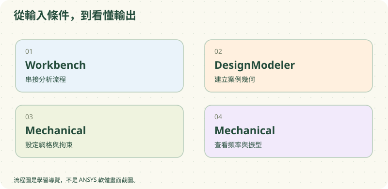
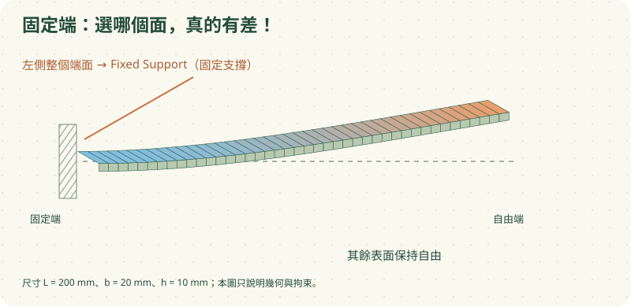
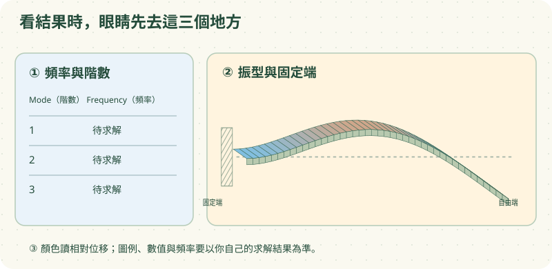
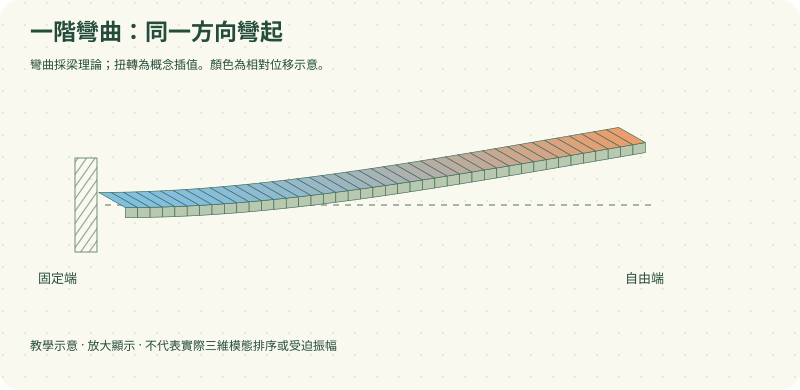

第一個案例：懸臂樑模態分析
從 Workbench 建立分析系統，以單一長方形實體練習材料、固定端、網格及前六階結果。
開始前
- 已安裝 Workbench 2024 R2 與 Mechanical 可用授權
- 可使用 DesignModeler，或可匯入相同尺寸的實體模型
- 先讀「先讀懂固有頻率，再看振型」
學習目標
- 完成單一實體的一端固定、另一端自由模型。
- 在英文介面辨認材料、網格、拘束與結果位置。
- 記錄前六階頻率，並逐一檢查振型。

⤢ 放大圖解前置條件與驗證範圍
Workbench（分析流程平台）串接資料與分析系統；DesignModeler（幾何建模工具）建立形狀；Mechanical（結構分析環境）處理材料指派、網格、拘束、求解與結果。下列幾何分支採 DesignModeler，若你的安裝只有其他幾何工具，可先匯入同尺寸實體再接續 Mechanical 步驟。
案例參數：教學自訂值
| 項目 | 設定 | 用途 |
|---|---|---|
| 幾何 | 長 L = 200 mm；寬 b = 20 mm；厚 h = 10 mm | 採單一 3D 實體，長度沿 X、寬度沿 Y、厚度沿 Z。 |
| Young’s Modulus（楊氏模數） | 200 GPa | 自訂均質線彈性材料。 |
| Poisson’s Ratio（蒲松比） | 0.30 | 搭配等向性彈性。 |
| Density（密度） | 7850 kg/m³ | 建立質量資訊。 |
| 固定端 | X = 0 的整個 20 × 10 mm 端面 | 只固定一端，其他表面保持自由。 |
| 初始網格尺寸 | 2.5 mm；Quadratic（二次） | 初始嘗試值，須檢查實際厚度方向分割與品質。 |
| 分析 | 無阻尼、無預應力，先求前六階 | 不施加外力，不模擬實際受迫振幅。 |

⤢ 放大圖解操作步驟一：系統、材料與幾何
建立 Modal（模態分析）系統
在 Workbench（分析流程平台）的 Toolbox（工具箱）→ Analysis Systems（分析系統）中，將 Modal（模態分析）拖曳到 Project Schematic（專案流程圖）。先用 File（檔案）→ Save As（另存新檔）儲存為 modal-cantilever.wbpj。
建立案例材料
開啟 Engineering Data（工程材料資料）。新增材料 Lab Steel Demo（實驗室鋼材示例），加入 Isotropic Elasticity（等向性彈性）與 Density（密度），填入表中的三項值及單位。這是示例材料，不代表任一真實試片的量測性質。
開啟幾何工具
返回專案流程圖，右鍵 Geometry（幾何）→ New DesignModeler Geometry（新建 DesignModeler 幾何）。於 Units（單位）選 Millimeter（毫米）。選 XYPlane（XY 平面），建立 New Sketch（新草圖），切換正對草圖平面的視角。
繪製並定義矩形
在 Sketching（草圖）→ Draw（繪製）→ Rectangle（矩形）畫出一角位於原點的矩形。使用 Dimensions（尺寸）→ Horizontal（水平）與 Vertical（垂直）將 X 向長度設 200 mm、Y 向寬度設 20 mm；確認原點角已與原點重合，而非只靠目測定位。
拉伸成實體
切回 Modeling（建模），選中該草圖，使用 Extrude（拉伸）。在 Details View（詳細資料）確認 Geometry（幾何）為該草圖、Operation（操作）為 Add Material（增加材料）、Depth（深度）為 10 mm，按 Generate（生成）。確認結果為 1 Part（零件）、1 Body（實體），且尺寸方向正確，再儲存並關閉幾何工具。
操作步驟二：Mechanical 設定
進入模型並指派材料
在 Workbench（分析流程平台）雙擊 Model（模型）。於 Mechanical（結構分析環境）樹狀目錄展開 Geometry（幾何），選長方形實體，在 Details（詳細資料）的 Material（材料）→ Assignment（指派）選 Lab Steel Demo（實驗室鋼材示例）。確認沒有誤用其他材料。
產生初始網格
選 Mesh（網格），在 Details（詳細資料）中將 Element Order（元素階次）設 Quadratic（二次），Element Size（元素尺寸）填 2.5 mm。右鍵 Mesh（網格）→ Generate Mesh（生成網格）。檢查網格是否完整，並在 Statistics（統計資訊）記錄 Nodes（節點）與 Elements（元素）數量。尺寸值不是收斂保證。
選取固定端面
右鍵樹狀目錄中的 Modal（模態分析）→ Insert（插入）→ Fixed Support（固定支撐）。切換 Face（面）選取篩選器，選 X = 0 的完整端面，於 Details（詳細資料）→ Geometry（幾何）按 Apply（套用）。確認顯示 1 Face（1 個面），並用旋轉視角確認不是長側面。
設定模態數
選 Modal（模態分析）下的 Analysis Settings（分析設定），在 Options（選項）中設 Max Modes to Find（最大擷取模態數）= 6、Limit Search to Range（限制搜尋範圍）= No（否）。在 Solver Controls（求解器控制）確認 Damped（考慮阻尼）= No（否），Solver Type（求解器類型）保留 Program Controlled（程式控制）。
操作步驟三：求解與記錄

⤢ 放大圖解執行求解
右鍵 Solution（求解與結果）→ Solve（求解）。查看 Solution Information（求解資訊）及 Messages（訊息）中的警告。若失敗，先依訊息檢查材料、網格與拘束，不要直接跳到結果頁。
查看六階頻率
選 Solution（求解與結果），查看 Tabular Data（表格資料）中的階數與頻率。選取所需頻率列，右鍵 Create Mode Shape Results（建立振型結果），再評估結果。亦可右鍵 Solution（求解與結果）→ Insert（插入）→ Deformation（變形）→ Total（總變形），並在結果詳細資料設定 Mode（模態階數）。
逐階檢查振型
選各個 Total Deformation（總變形）結果並播放振型動畫，觀察彎曲方向、扭轉與固定端是否維持不動。以相對形狀辨識模態，不把動畫振幅當成真實變形量。
保存可交接的記錄
將階數、頻率、振型描述、網格大小、節點與元素數記入自己的表格。保留模型檔與資料夾；分享時可使用 Workbench（分析流程平台）的 File（檔案）→ Archive（封存）建立 .wbpz 封存檔，並確認封存包含需要的模型資料。
結果檢查
同一支樑，可以怎麼振？

整支樑往同一方向彎。除了固定端，沒有其他內部節點。
彎曲依 Euler–Bernoulli 梁理論繪製；扭轉為概念插值。動畫放大、同速慢放，顏色依各型態最大位移正規化；不是 ANSYS 求解結果，也不是實際三維階數排序。 圖解依據 ↗
- 固定位置應是 X = 0 的整個端面；若看見整支樑平移，應先檢查拘束。
- 材料三項性質與幾何尺寸、單位須與案例表一致。
- 前六階可能包含不同方向的彎曲或扭轉，不預先把所有階數都當成同方向彎曲。
- 繼續比較 2.5、2、1.5 mm 的網格；這是待執行方案，尚無收斂數據。
- 求解成功只代表計算完成，還需要物理檢查與網格檢查。
💡 如果整支樑一起漂走，你會先看哪個設定？
先看 Fixed Support（固定支撐）是否已啟用，以及 Geometry（幾何）是不是 X = 0 的整個端面。單一一端固定樑若整體自由漂動，需先確認拘束，不是先加更多模態數。
重點整理
- 流程為材料與幾何 → 網格與固定端 → 分析設定 → 求解與振型判讀。
- 先完成可說明的簡單案例，再增加齒輪、軸承與接觸。
- 下一步補實際操作證據，並完成相同振型的網格比較。
參考來源
以下來源用於技術查證；案例尺寸與初始網格是本教學自訂設定。原廠頁面可能依存取權限要求登入。
- ANSYS Mechanical User’s Guide — Modal Analysis ↗2024 R2 · Workbench 模態分析流程、材料需求與振型結果判讀。
- ANSYS Mechanical User’s Guide — Fixed Support ↗2024 R2 · 固定支撐用途、插入方法與幾何選取。
- ANSYS Mechanical Object Reference — Mesh ↗2024 R2 · 網格屬性、元素階次、生成網格與統計資訊。
- ANSYS Mechanical User’s Guide — Modal Analysis Options ↗2024 R2 · Max Modes to Find（最大擷取模態數）與頻率搜尋範圍。
- ANSYS DesignModeler User’s Guide ↗2024 R2 · 草圖、尺寸與拉伸等幾何建模工具；教學的尺寸為自訂案例。
- Graz University of Technology — Cantilever beam ↗梁理論教材；非 ANSYS 版本限定 · 懸臂樑彎曲的邊界條件、解析振型及特徵根。互動繪圖依此式計算。
- ANSYS / Cornell — Cantilever Beam Modal Analysis: Pre-Analysis ↗原廠梁理論課程；非 2024 R2 操作介面 · Euler–Bernoulli 彎曲振型與理論預估；本網站未使用課程的範例頻率作為自身結果。